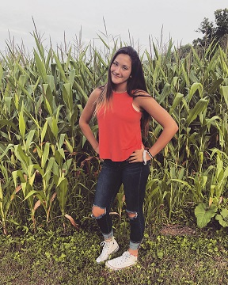

Home... Fairmont, West Virginia

Born and raised in West Virginia, my family's decision was to move to New Bloomfield, Pennsylvania in fall of 2015. I lived in the same house between Fairmont and Wrothington until this took place. I was very involved in the community such as church, sports, outreaches, etc. I swam for Fairmont State University under their youth program, F.A.S.T. I participated in a ton of meets and recieved many ribbons. When I moved, I was not able to continue swimming and instead, found interest in volleyball. I've always found a love for sports and have done many in my past. I've participated in cheerleading, soccer, gymnastics, swimming, and now volleyball. I spent a lot of time at home as well as the church that both of my parents worked at. If I wasn't there, I was probably eating a pepperoni roll in some kind of resturant.
There is no place like home. Country roads, take me home...
More About Me

I'm super outgoing, persistent, loud, and compassonate. When you first meet me, you'll think the complete opposite until i', comfortable. I love working with animals, technology, people, etc.. I enjoy watching movies, being warm, looking at the sky, and trying to do as many things as possible. I enjoy babysitting my nephew, Liam, and spending time with my brother and sister-in-law.